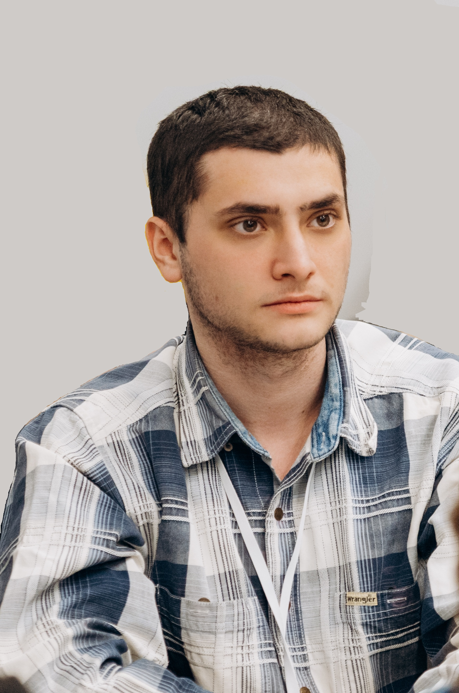
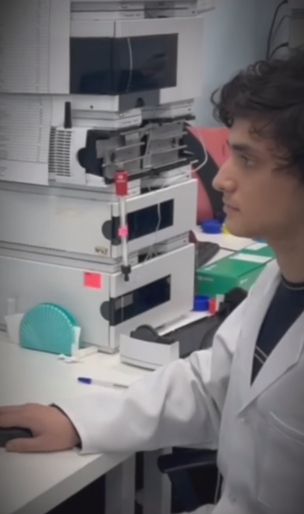
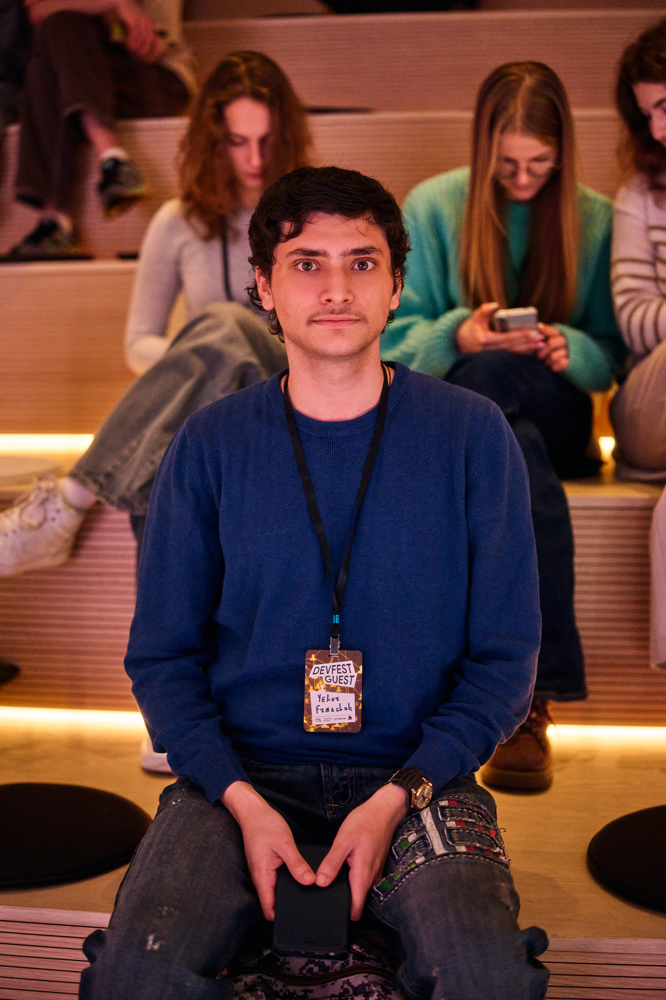
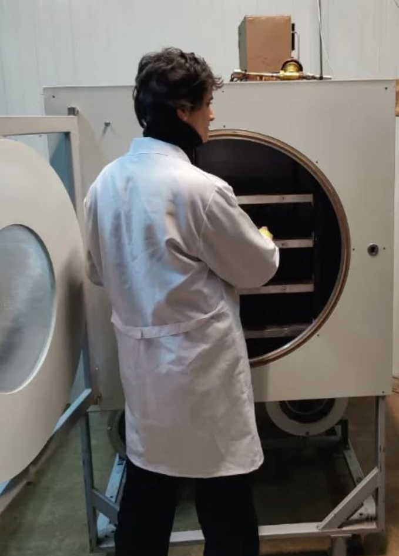

About Me
Highly motivated young scientist passionate about computational drug discovery, structural biology, and bioinformatics.
Currently working as a Bioinformatician & Molecular Biologist at the Institute of Molecular Biology and Genetics, NAS of Ukraine, researching lncRNAs as therapeutic targets and biomarkers in cancer. My work combines structural bioinformatics, machine learning pipelines, and wet-lab validation to accelerate novel therapeutics development.
Professional Experience
Bioinformatician & Molecular Biologist
- Researching long non-coding RNAs (lncRNAs) as therapeutic targets and biomarkers in oncological diseases.
- Performing in silico structural analysis of lncRNAs, structural predictions, and interaction profiling.
- Conducting molecular dynamics simulations of RNA-protein and RNA-ligand complexes.
Research Assistant
- Conducted bioinformatics analyses on wound healing pathways using rat models.
- Applied animal modeling, histological preparation, and brightfield/fluorescence microscopy.
Laboratory Intern
- Investigated systemic inflammatory markers and pro-inflammatory DAMP molecule cascades in post-COVID patients.
- Supported clinical research datasets validation and biochemical testing.
Education
MSc in Biology and Biochemistry (Bioinformatics & Structural Biology)
Graduated with Honors. Specializations: Structural Genomics, Applied Bioinformatics, Computational Chemistry, Programming in Bioinformatics, Mathematical Modeling. Focus: NGS pipelines, protein engineering, drug design, lncRNAs.
BSc in Biotechnology and Bioengineering (Pharmaceutical Biotechnology)
Graduated with Honors.
Scientific Schools & Workshops
- 9th Advanced in Silico Drug Design Workshop 2026: (Prague, Czech Republic) – Focused on AI-driven molecular dynamics, high-throughput docking, and CADD methodologies. Book of Abstracts ↗
- EEBG’26: Eastern European Bioinformatics and Computational Genomics Workshop
- Bioinformatics & Rare Diseases: 27th Bologna Winter School (Università di Bologna) 2026
- XXI Summer School: Molecular Biology, Biotechnology and Biomedicine (2026)
- UBDS3: Uzhhorod Bioinformatics & Data Science School 3 (2025)
- CRABS 2025: Computational Biology School (KSE)
- CRISPR-based Gene Knockout School 2025: (YP Biotech)
- School on Biologically Active Compounds 2025: (Explogen LLC)
Technical & Laboratory Skills
Publications
Volunteer & Community Activity
- Volunteer Bioinformatician: Bioinformatics for Ukraine (2025-2026)
- Volunteer Assistant: BioGENext educational series (2025)
Awards & Languages
Languages
- Ukrainian — Native
- English — Upper-Intermediate (B2)
- German — Intermediate (B1)
Awards
- 🎓 MSc Graduation with Honors (2026)
- 🔬 BSc Graduation with Honors (2024)
- 🏅 Gold Medal - Secondary School (2020)

